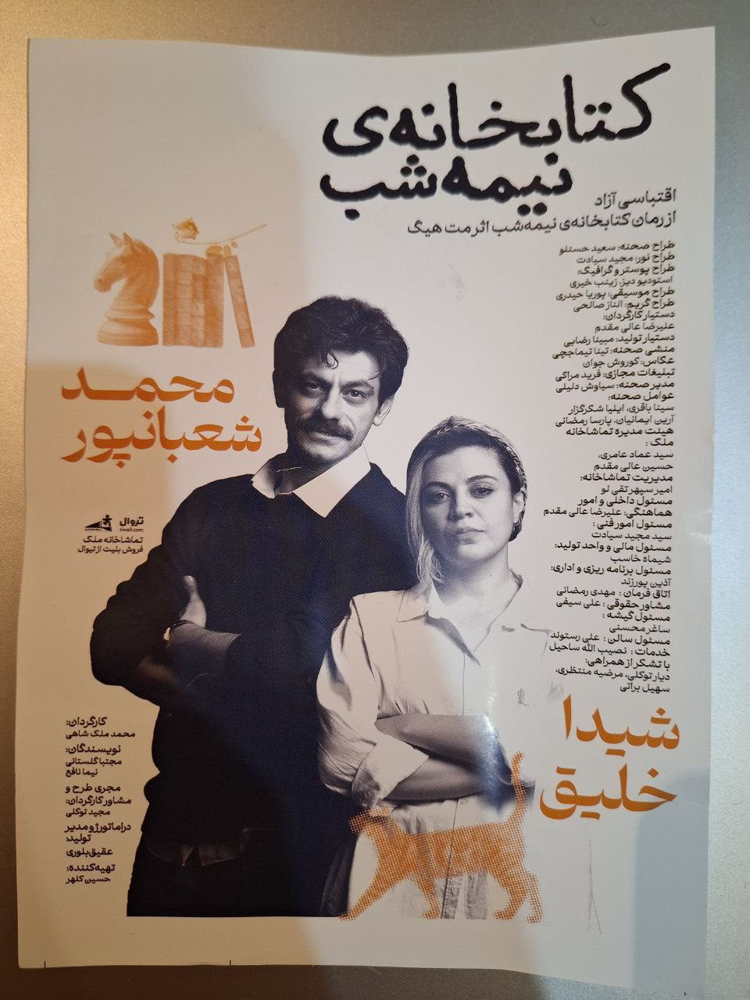

کتابخانه نیمهشب و خطا بر قلم صنع
دیشب بعد از مدتها فرصتی پیش آمد که در تماشانه به تماشای هنر اجرای زنده بنشینم. به توصیه دوستان و با کمی جستوجو در اینترنت، تئاتر «کتابخانه نیمهشب» را انتخاب کردم.

چهارشنبه شبی و تماشاخانه ملک و تئاتر کتابخانه نیمهشب. قبل از آنکه به خود اجرا بپردازم، میخواهم از تماشاخانه بگویم. تماشاخانهای با گنجایش چند ده نفر (احتمالا صد نفر) و تنها یک سرویس بهداشتی! ده دقیقه قبل از اجرای نمایش رسیدم و صف عجیبی دم در سرویس دیدم. این مورد به هیچ وجه زیبنده نیست. از طرفی، با توجه به قیمت نه چندان ارزان بلیطها، کیفیت صندلیهای سالن چنگی به دل نمیزد.
قبل از پرداختن به خود اجرا، باز هم میخواهم از رفتار تماشاگران بگویم. ما ایرانیان، شهروندان کشوری متمدن هستیم اما گاهی وقتها این تاریخ و تمدن در رفتار ما نمود بیرونی ندارد. قهقههای آنچنانی، تعریف پس و پیش داستان برای نفر کناری و رفتارهای خارج از عرف، همگی باعث شدند تا بخشهایی از دیالوگها را از دست بدهم. من هم به رسم ایرانیان دردمند و بزرگوار اواخر دوره قاجار، البته با فاصله صد سال، آرزو میکنم روزی برسد که رفتار ما با تاریخ پر افتخارمان پیوند بخورد.
و اما خود تئاتر، گویا کتابی با همین نام هم وجود دارد که من تا حالا فرصت مطالعهاش را نداشتهام. اجراها نسبتا خوب بود. به خصوص اجرای آقای محمد شعبانپور . اجرای آقای شعبانپور به حدی خوب بود که اجرای خانم شیدا خلیق کمتر به چشم آمد. البته آقای شعبانپور در حین اجرا، تعاملهایی با تماشاگران داشتند که از نظر من غیرضروری بود. البته از حق نگذریم، آقای شعبانپور چند نقش مختلف را با هنرمندی تمام اجرا کردند. به شخصه از اجرای ایشان لذت بردم.
مورد دیگر تغییر دکور صحنه بود. انتظار داشتم تغییر دکور از دید تماشاگران پنهان بماند اما این گونه نشد. احتمال میدهم برای این مورد دلیلی داشته باشند. نمیدانم.
بزرگترین ضعف این اجرا، دیالوگ «بدون اینکه بخوای هیچ گهی بشی از زندگیت لذت ببر» بود. راستش را بخواهید، وقتی این دیالوگ از زبان آقای شعبانپور خارج شد اشتیاقم برای تماشای مجدد این اجرا از بین رفت. بزرگان شعر و هنر ما وقتی میخواستند سخنی بگویند تمام تلاششان را میکردند که پیام را به شکل مستقیم و اندرزگونه بیان نکنند. وقتی سرور ما جناب حافظ شیرازی میفرمایند:
پیر ما گفت خطا بر قلم صنع نرفت/آفرین بر نظر پاک خطاپوشش باد
برداشت از این پیام را به شنونده و خواننده واگذار میکنند و البته نمیخواهند، نه اینکه نتوانند، کسی را نصیحت کنند. خوش داشتم تهیهکنندگان تئاتر کتابخانه نیمهشب برداشت از اجرا را به عهده تماشاگران بگذارند و سعی در نصیحت کردن کسی نداشته باشند. بخواهم رک باشم، بعد از شنیدن این دیالوگ مابقی اجرا را جدی نگرفتم.
نقطه ضعف دیگر وام گرفتن از شوخیهای وایرال شده در شبکههای اجتماعی برای جذب بیشتر مخاطب بود. کاری غیرضروری که تنها باعث گنگ شدن بیشتر نمایش میشد بی آنکه در پیشبرد داستان نقش ایفا کند. هر موقع تماشاگران قهقه میزند متوجه میشدم که جناب شعبانپور از فضای مجازی مطلبی نقل کرده است.
همه اینها به کنار، وقتی از تماشاخانه بیرون آمدم، از صرف وقت و هزینه برای دیدن این نمایش راضی بودم.